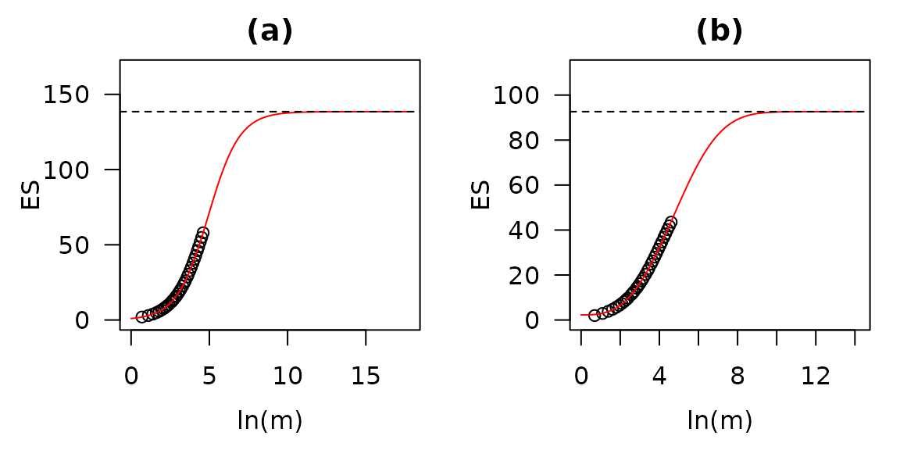
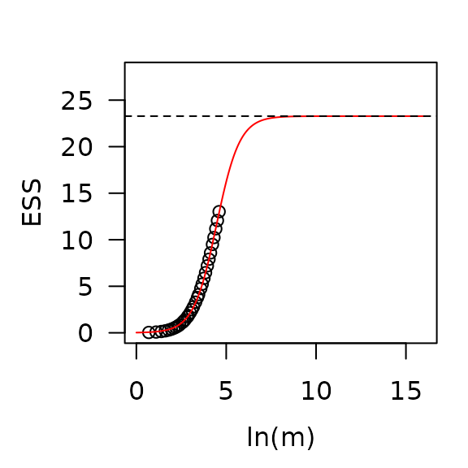
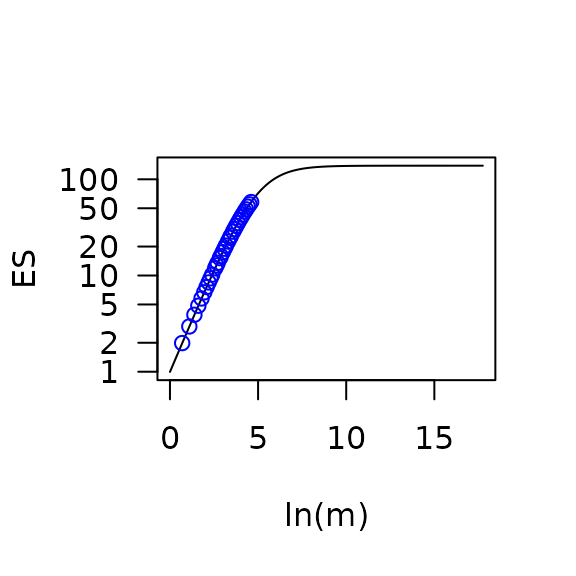

vignettes/rarestR.Rmd
rarestR.RmdrarestR is an R package of rarefaction-based species richness estimator. This package is designed to calculate rarefaction-based - and -diversity. It also offers parametric extrapolation to estimate the total expected species in a single community and the total expected shared species between two communities. The package also provides visualization of the curve-fitting for these estimators.
# Stable version
install.packages('rarestR')
# Development version
remotes::install_github('pzhaonet/rarestR')The dataset share is a matrix with 3 rows and 142 columns. It comprises three samples randomly drawn from three simulated communities. Every community consists of 100 species with approximately 100,000 individuals following a log-normal distribution (mean = 6.5, SD = 1). Setting the first community as control group, the second and third community shared a total of 25 and 50 species with the control. A more detailed description of the control and scenario groups can be found in Zou and Axmacher (2021). The share dataset represents a random subsample of 100, 150, and 200 individuals from three three communities, containing 58, 57, and 74 species, respectively.
es(share, m = 100)## 1 2 3
## 58.00000 47.77653 53.00568
es(share, method = "b", m = 100)## 1 2 3
## 43.51041 40.74378 46.19118
# When the m is larger than the total sample size, "NA" will be filled:
es(share, m = 150)## Warning in es(y, m, method): m can not be larger than the total sample size## 1 2 3
## NA 57.00000 65.24147
ess(share)## 1 2
## 2 0.7970962
## 3 0.6359703 0.7642330
ess(share, m = 100)## 1 2
## 2 0.8566624
## 3 0.7308390 0.8229221
ess(share, m = 100, index = "ESS")## 1 2
## 2 13.01735
## 3 22.65674 13.23924
Output_tes <- tes(x = share[1,])
Output_tes## est est.sd model.par
## TESa 138.50 2.46 logistic
## TESb 92.63 32.65 Weibull
## TESab 115.56 16.37 <NA>
plot(Output_tes)
Output_tess <- tess(share[1:2,])
Output_tess## est est.sd model.par
## 1 23.28 2.59 logistic
plot(Output_tess)
The rarestR package provides a S3 method to use the
generic plot() function for visualizing the output of the
tes() and tess() functions in a fast way and
consistent way, which is friendly to R beginners. Advanced R users might
want to customize the plots. They can extract the modelled data and use
other data visualization functions. Here we demonstrate how to customize
the plot of the Total Expected Species calculated on the basis of the
previous example.
The tes() function returns a list
(Output_tes) with (1) a data frame ($tbl) of
the summary of the estimated values and their standard deviations based
on TESa, TESb, and TESab, and the model used in the estimation of TES,
either ‘logistic’ or ‘Weibull’., (2) a list ($TESa) of the
modeled results with the TESa method, and (3) a list
($TESb) of the modelled results with the TESb method. By
default, only the data frame is printed in the R console when printing
Output_tes:
Output_tes## est est.sd model.par
## TESa 138.50 2.46 logistic
## TESb 92.63 32.65 Weibull
## TESab 115.56 16.37 <NA>
Output_tes$tbl## est est.sd model.par
## TESa 138.50 2.46 logistic
## TESb 92.63 32.65 Weibull
## TESab 115.56 16.37 <NA>You can explicitly print the two lists as well:
Output_tes$TESa
Output_tes$TESbor see their structures:
str(Output_tes$TESa)## List of 5
## $ par : Named chr [1:3] "138.5" "2.46" "logistic"
## ..- attr(*, "names")= chr [1:3] "est" "est.sd" "model.par"
## $ result:'data.frame': 33 obs. of 2 variables:
## ..$ value: num [1:33] 1.98 2.95 3.91 4.85 5.78 ...
## ..$ Logm : num [1:33] 0.693 1.099 1.386 1.609 1.792 ...
## $ xmax : num 8.88
## $ Predx : num [1:1000] 0 0.0178 0.0355 0.0533 0.0711 ...
## $ Predy : num [1:1000] 0.996 1.013 1.031 1.05 1.068 ...
str(Output_tes$TESb)## List of 5
## $ par : Named chr [1:3] "92.63" "32.65" "Weibull"
## ..- attr(*, "names")= chr [1:3] "est" "est.sd" "model.par"
## $ result:'data.frame': 33 obs. of 2 variables:
## ..$ value: num [1:33] 1.97 2.92 3.85 4.76 5.64 ...
## ..$ Logm : num [1:33] 0.693 1.099 1.386 1.609 1.792 ...
## $ xmax : num 7.1
## $ Predx : num [1:1000] 0 0.0142 0.0284 0.0427 0.0569 ...
## $ Predy : num [1:1000] 2.27 2.27 2.27 2.27 2.27 ...Thus, you can extract the simulated results and predicted x and y values for TESa:
Output_tes$TESa$result
Output_tes$TESa$Predx
Output_tes$TESa$Predyor TESb in a similar way.
Then, you can visualize these data in your favourite way. In the
following example, we use the base R functions with rotated y labels
(las = 1), logarithmic y axis (log = "y"), and
blue points (‘col = “blue”’):
plot(Output_tes$TESa$Predx, Output_tes$TESa$Predy, type = 'l', las = 1,
xlab = 'ln(m)', ylab = 'ES', log = 'y')
points(Output_tes$TESa$result$Logm, Output_tes$TESa$result$value, col = 'blue')
You can use ggplot2 as well. Here is an example (not shown):
library(ggplot2)
ggplot() +
geom_line(aes(Output_tes$TESa$Predx, Output_tes$TESa$Predy)) +
geom_point(aes(Logm, value), data = Output_tes$TESa$result, colour = 'red', shape = 1, size = 3) +
geom_hline(yintercept = as.numeric(Output_tes$TESa$par[1]), linetype = 2) +
lims(x = c(0, 20), y = c(0, 150)) +
labs(x = 'ln(m)', y = 'ES')For more details, see the Details section in the help
documents for tes() and tess().
Zou Y, Zhao P, Wu N, Lai J, Peres-Neto PR, Axmacher JC (2025). “rarestR: An R Package Using Rarefaction Metrics to Estimate -and -Diversity for Incomplete Samples.” Diversity and Distributions, 31(1), e13954. doi:10.1111/ddi.13954.